第一章 Flink概述
1.1 Flink是什么
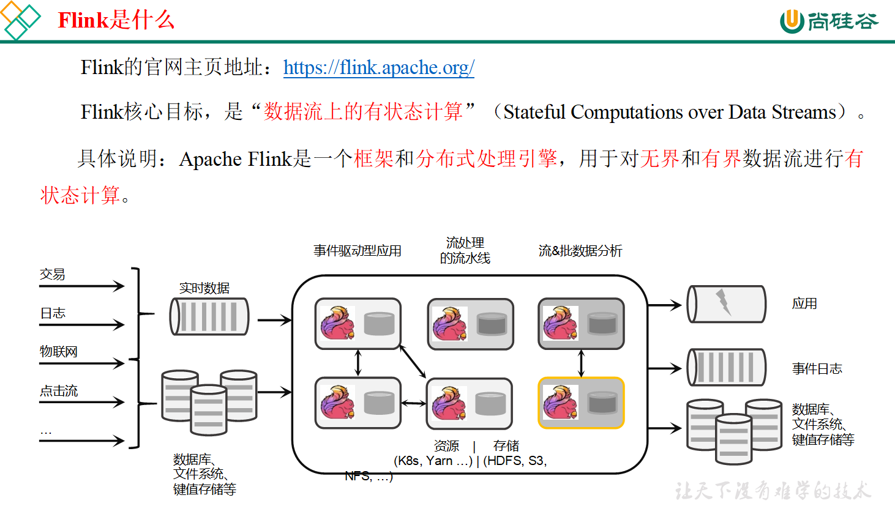
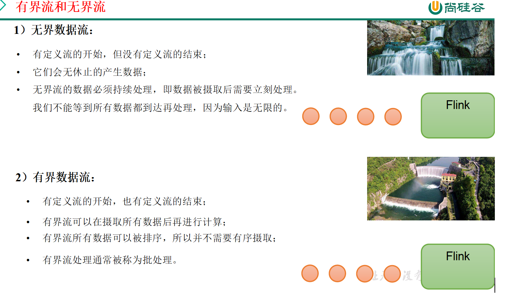
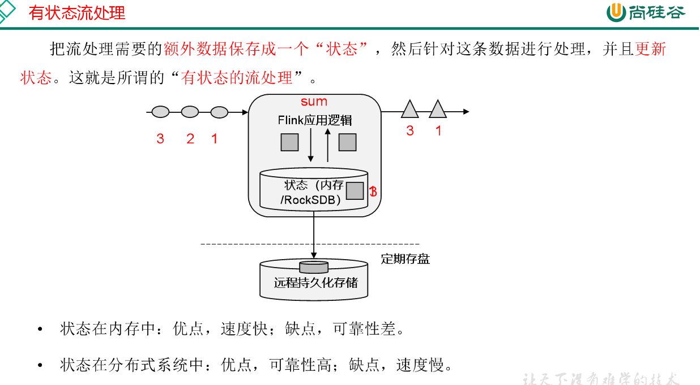
1.2 Flink特点
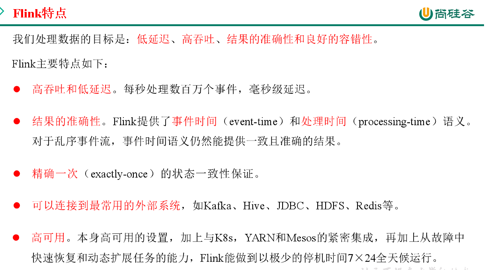
1.3 Flink vs SparkStreaming
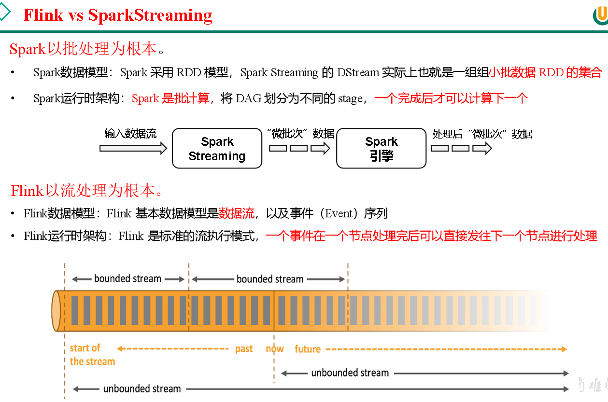
| Flink | Streaming | |
|---|---|---|
| 计算模型 | 流计算 | 微批处理 |
| 时间语义 | 事件时间、处理时间 | 处理时间 |
| 窗口 | 多、灵活 | 少、不灵活（窗口必须是批次的整数倍） |
| 状态 | 有 | 没有 |
| 流式SQL | 有 | 没有 |
1.4 Flink的应用场景
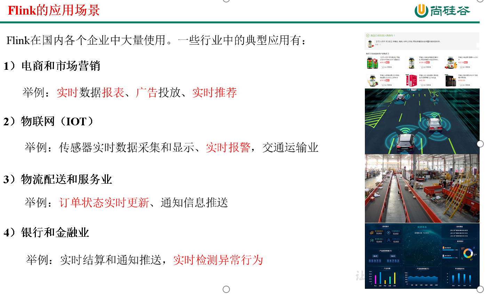
1.5 Flink分层API
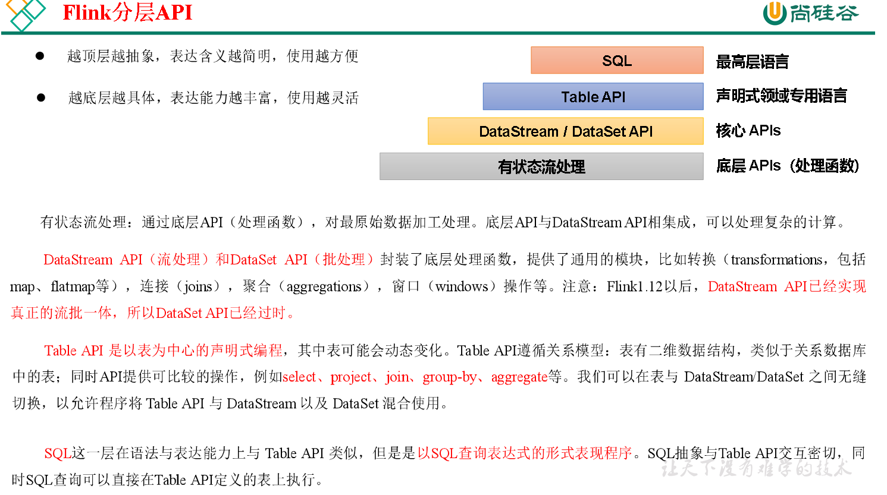
第二章 Flink快速上手
2.1 创建项目
（1）创建Maven工程
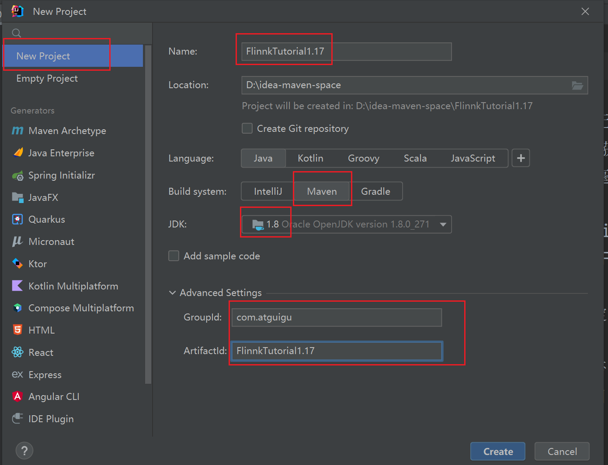（2）添加项目依赖
1 | <properties> |
2.2 WordCount代码编写
需求：统计一段文字中，每个单词出现的频次。
环境准备：在src/main/java目录下，新建一个包，命名为com.atguigu.wc
2.2.1 批处理（已过时）
批处理基本思路：先逐行读入文件数据，然后将每一行文字拆分成单词；接着按照单词分组，统计每组数据的个数，就是对应单词的频次。
1 | public class WordCountBatchDemo { |
1 | (flink,1) |
需要注意的是，这种代码的实现方式，是基于DataSet API的，也就是我们对数据的处理转换，是看作数据集来进行操作的。事实上Flink本身是流批统一的处理架构，批量的数据集本质上也是流，没有必要用两套不同的API来实现。所以从Flink 1.12开始，官方推荐的做法是直接使用DataStream API，在提交任务时通过将执行模式设为BATCH来进行批处理：
1 | bin/flink run -Dexecution.runtime-mode=BATCH BatchWordCount.jar |
这样，DataSet API就没什么用了，在实际应用中我们只要维护一套DataStream API就可以。这里只是为了方便大家理解，我们依然用DataSet API做了批处理的实现。
2.2.2 流处理
对于Flink而言，流才是整个处理逻辑的底层核心，所以流批统一之后的DataStream API更加强大，可以直接处理批处理和流处理的所有场景。
下面我们就针对不同类型的输入数据源，用具体的代码来实现流处理。
（1）读取文件
我们同样试图读取文档words.txt中的数据，并统计每个单词出现的频次。整体思路与之前的批处理非常类似，代码模式也基本一致。
1 | public class WordCountStreamDemo { |
1 | 13> (flink,1) |
主要观察与批处理程序BatchWordCount的不同：
- 创建执行环境的不同，流处理程序使用的是StreamExecutionEnvironment。
- 转换处理之后，得到的数据对象类型不同。
- 分组操作调用的是keyBy方法，可以传入一个匿名函数作为键选择器（KeySelector），指定当前分组的key是什么。
- 代码末尾需要调用env的execute方法，开始执行任务。
（2）读取socket文本流
在实际的生产环境中，真正的数据流其实是无界的，有开始却没有结束，这就要求我们需要持续地处理捕获的数据。为了模拟这种场景，可以监听socket端口，然后向该端口不断的发送数据。
1 | public class WordCountStreamUnboundedDemo { |
在hadoop102上执行以下命令：
1 | [root@hadoop102 ~]# nc -lk 7777 |
在hadoop102主机中输入
1 | hello flink hello |
在控制台显示
1 | 5> (hello,1) |
在hadoop102主机中输入
1 | hello flink |
在控制台显示
1 | 5> (hello,3) |
说明：
Flink还具有一个类型提取系统，可以分析函数的输入和返回类型，自动获取类型信息，从而获得对应的序列化器和反序列化器。但是，由于Java中泛型擦除的存在，在某些特殊情况下（比如Lambda表达式中），自动提取的信息是不够精细的——只告诉Flink当前的元素由“船头、船身、船尾”构成，根本无法重建出“大船”的模样；这时就需要显式地提供类型信息，才能使应用程序正常工作或提高其性能。
因为对于flatMap里传入的Lambda表达式，系统只能推断出返回的是Tuple2类型，而无法得到Tuple2<String, Long>。只有显式地告诉系统当前的返回类型，才能正确地解析出完整数据。
第三章 Flink部署
3.1 集群角色
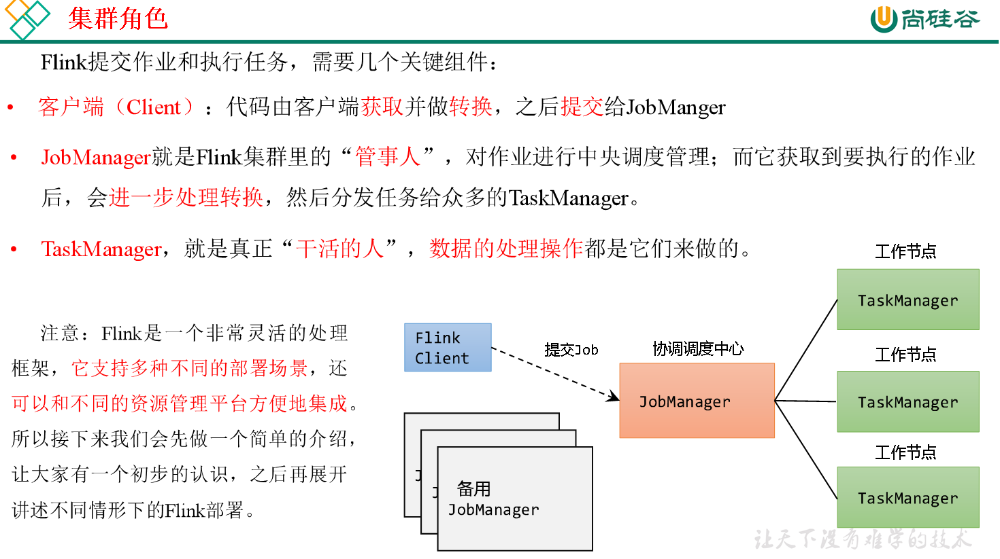
3.2 Flink集群搭建
3.2.1 集群启动
（0）集群规划
| 节点服务器 | hadoop102 | hadoop103 | hadoop104 |
|---|---|---|---|
| 角色 | JobManager TaskManager |
TaskManager | TaskManager |
（1）下载并解压安装包
下载安装包flink-1.17.0-bin-scala_2.12.tgz，将该jar包上传到hadoop102节点服务器的/opt/software路径上。
在/opt/software路径上解压flink-1.17.0-bin-scala_2.12.tgz到/opt/module路径上
1 | [root@hadoop102 software]# tar -zxvf flink-1.17.0-bin-scala_2.12.tgz -C /opt/module/ |
（2）修改集群配置
进入conf路径，修改flink-conf.yaml文件，指定hadoop102节点服务器为JobManager
1 | [root@hadoop102 flink-1.17.0]# cd conf/ |
1 | JobManager节点地址. |
修改workers文件，指定hadoop102、hadoop103和hadoop104为TaskManager
1 | [root@hadoop102 conf]# vim workers |
1 | hadoop102 |
修改masters文件
1 | [root@hadoop102 conf]# vim masters |
1 | hadoop102:8081 |
另外，在flink-conf.yaml文件中还可以对集群中的JobManager和TaskManager组件进行优化配置，主要配置项如下：
- jobmanager.memory.process.size：对JobManager进程可使用到的全部内存进行配置，包括JVM元空间和其他开销，默认为1600M，可以根据集群规模进行适当调整。
- taskmanager.memory.process.size：对TaskManager进程可使用到的全部内存进行配置，包括JVM元空间和其他开销，默认为1728M，可以根据集群规模进行适当调整。
- taskmanager.numberOfTaskSlots：对每个TaskManager能够分配的Slot数量进行配置，默认为1，可根据TaskManager所在的机器能够提供给Flink的CPU数量决定。所谓Slot就是TaskManager中具体运行一个任务所分配的计算资源。
- parallelism.default：Flink任务执行的并行度，默认为1。优先级低于代码中进行的并行度配置和任务提交时使用参数指定的并行度数量。
关于Slot和并行度的概念，我们会在下一章做详细讲解。
（3）分发安装目录
配置修改完毕后，将Flink安装目录发给另外两个节点服务器。
1 | [root@hadoop102 module]$ xsync flink-1.17.0/ |
修改hadoop103的 taskmanager.host
1 | [root@hadoop103 conf]$ vim flink-conf.yaml |
1 | TaskManager节点地址.需要配置为当前机器名 |
修改hadoop104的 taskmanager.host
1 | [root@hadoop104 conf]$ vim flink-conf.yaml |
1 | TaskManager节点地址.需要配置为当前机器名 |
（4）启动集群
在hadoop102节点服务器上执行start-cluster.sh启动Flink集群：
1 | [root@hadoop102 flink-1.17.0]# bin/start-cluster.sh |
1 | [root@hadoop102 flink-1.17.0]# xcall.sh jps |
（5）访问WebUI
启动成功后，同样可以访问http://hadoop102:8081对flink集群和任务进行监控管理。
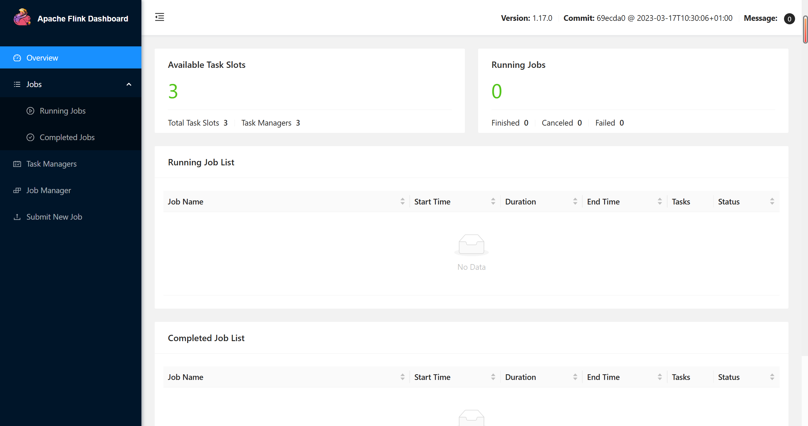
这里可以明显看到，当前集群的TaskManager数量为3；由于默认每个TaskManager的Slot数量为1，所以总Slot数和可用Slot数都为3。
3.2.2 向集群提交作业
（1）环境准备
1 | [root@hadoop102 flink-1.17.0]$ nc -lk 7777 |
（2）添加依赖，程序打包
1 | <build> |
使用maven工具进行打包
打包完成后，在target目录下即可找到所需JAR包，JAR包会有两个，FlinkTutorial-1.0-SNAPSHOT.jar和FlinkTutorial-1.0-SNAPSHOT-jar-with-dependencies.jar，因为集群中已经具备任务运行所需的所有依赖，所以建议使用FlinkTutorial1.17-1.0-SNAPSHOT.jar
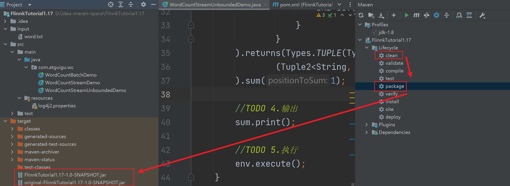
（3）在WebUI上提交作业
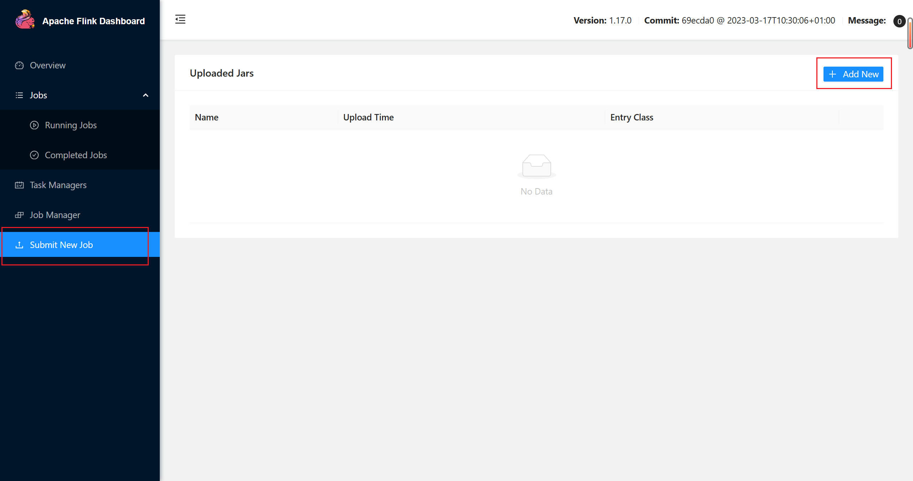
主要配置程序入口主类的全类名，任务运行的并行度，任务运行所需的配置参数和保存点路径等，如下图所示，配置完成后，即可点击按钮“Submit”，将任务提交到集群运行
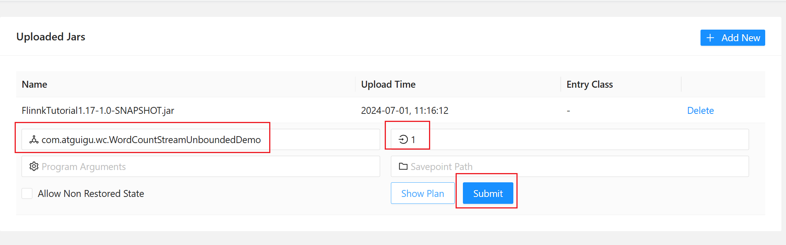
任务提交成功之后，可点击左侧导航栏的“Running Jobs”查看程序运行列表情况
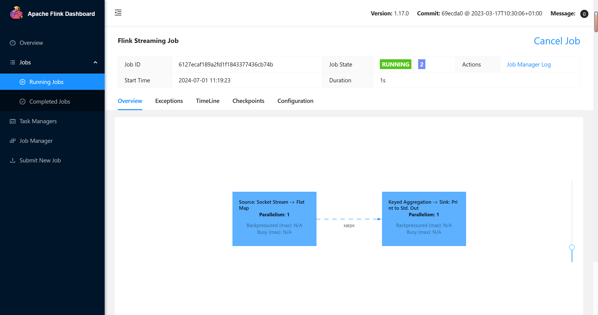
在socket端口中输入
1 | hello flink |
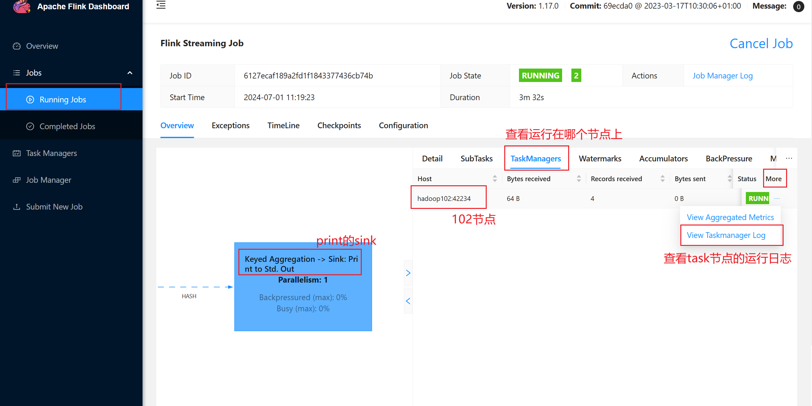
跳转到task运行日志中，点击Stdout查看输出
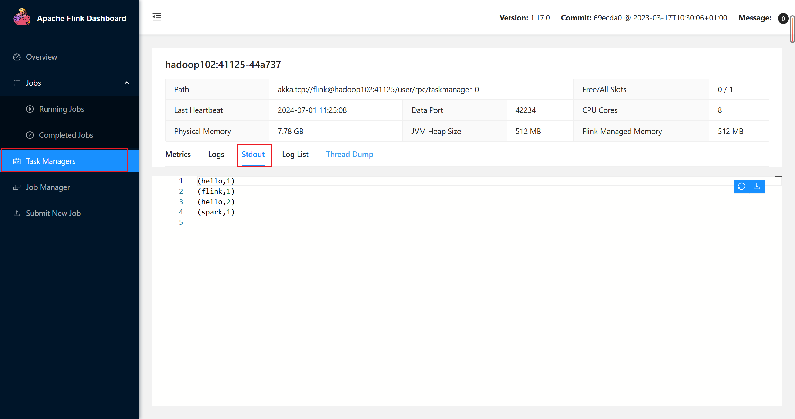
点击该任务，可以查看任务运行的具体情况，也可以通过点击“Cancel Job”结束任务运行。
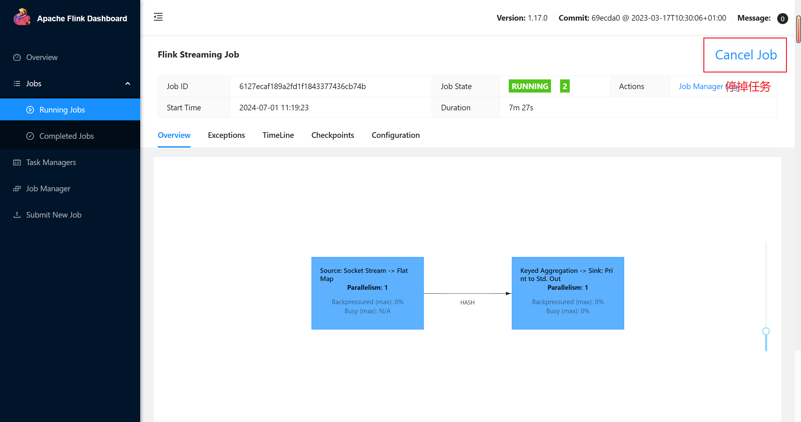
（4）命令行提交作业
在hadoop102中执行以下命令启动netcat。
1 | [root@hadoop102 ~]# nc -lk 7777 |
先把jar包直接上传到目录flink-1.17.0下。进入到flink的安装路径下，在命令行使用flink run命令提交作业
1 | [root@hadoop102 flink-1.17.0]# bin/flink run -m hadoop102:8081 -c com.atguigu.wc.WordCountStreamUnboundedDemo ./FlinnkTutorial1.17-1.0-SNAPSHOT.jar |
这里的参数 -m指定了提交到的JobManager，-c指定了入口类
在WebUI中查看
在/opt/module/flink-1.17.0/log路径中，可以查看TaskManager节点
1 | [root@hadoop102 flink-1.17.0]# cd log |
3.3 部署模式
在一些应用场景中，对于集群资源分配和占用的方式，可能会有特定的需求。Flink为各种场景提供了不同的部署模式，主要有以下三种：会话模式（Session Mode）、单作业模式（Per-Job Mode）、应用模式（Application Mode）。
它们的区别主要在于：集群的生命周期以及资源的分配方式；以及应用的main方法到底在哪里执行——客户端（Client）还是JobManager。
3.3.1 会话模式（Session Mode）
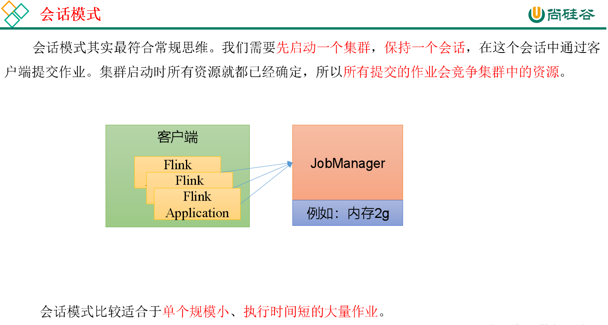
3.3.2 单作业模式（Per-Job Mode）（实际应用的首选）
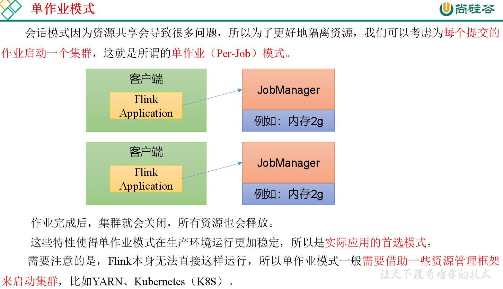
3.3.3 应用模式（Application Mode）
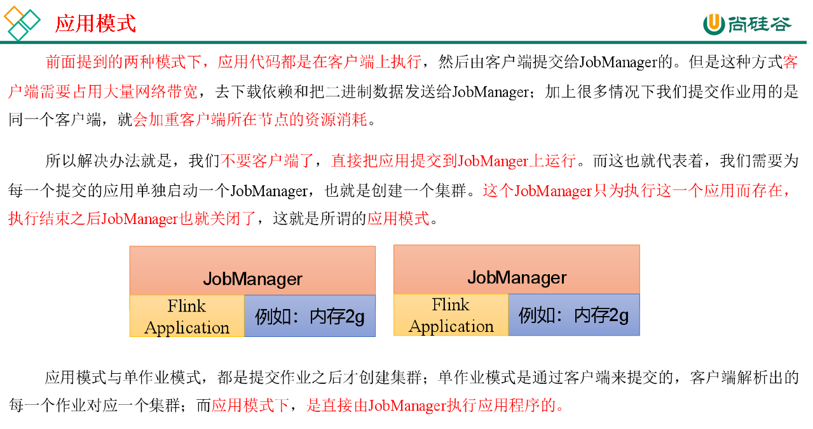
这里我们所讲到的部署模式，相对是比较抽象的概念。实际应用时，一般需要和资源管理平台结合起来，选择特定的模式来分配资源、部署应用。接下来，我们就针对不同的资源提供者的场景，具体介绍Flink的部署方式。
3.4 Standalone运行模式（了解）
独立模式是独立运行的，不依赖任何外部的资源管理平台；当然独立也是有代价的：如果资源不足，或者出现故障，没有自动扩展或重分配资源的保证，必须手动处理。所以独立模式一般只用在开发测试或作业非常少的场景下。
3.4.1 会话模式部署
我们在第3.2节用的就是Standalone集群的会话模式部署。
提前启动集群，并通过Web页面客户端提交任务（可以多个任务，但是集群资源固定）。
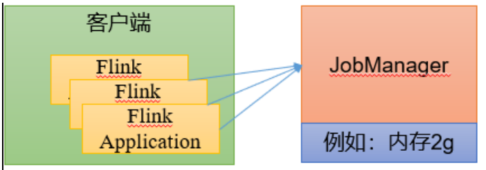3.4.2 单作业模式部署
Flink的Standalone集群并不支持单作业模式部署。因为单作业模式需要借助一些资源管理平台。
3.4.3 应用部署模式
应用模式下不会提前创建集群，所以不能调用start-cluster.sh脚本。我们可以使用同样在bin目录下的standalone-job.sh来创建一个JobManager。
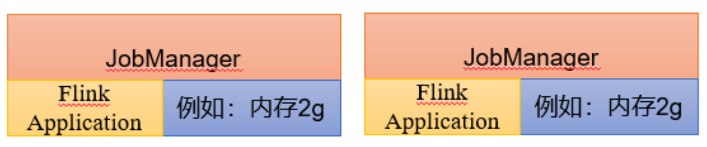具体步骤如下：
（1）环境准备。在hadoop102中执行以下命令启动netcat。
1 | [root@hadoop102 ~]# nc -lk 7777 |
（2）进入到Flink的安装路径下，将应用程序的jar包放到lib/目录下。（jar包只能放在lib/目录下）
1 | [root@hadoop102 flink-1.17.0]# mv FlinnkTutorial1.17-1.0-SNAPSHOT.jar lib |
（3）执行以下命令，启动JobManager。这里我们直接指定作业入口类，脚本会到lib目录扫描所有的jar包。
1 | [root@hadoop102 flink-1.17.0]# bin/standalone-job.sh start --job-classname com.atguigu.wc.WordCountStreamUnboundedDemo |
（4）同样是使用bin目录下的脚本，启动TaskManager。
1 | [root@hadoop102 flink-1.17.0]# bin/taskmanager.sh start |
（5）在hadoop102上模拟发送单词数据
1 | [root@hadoop102 ~]# nc -lk 7777 |
（6）在hadoop102:8081地址中观察输出数据
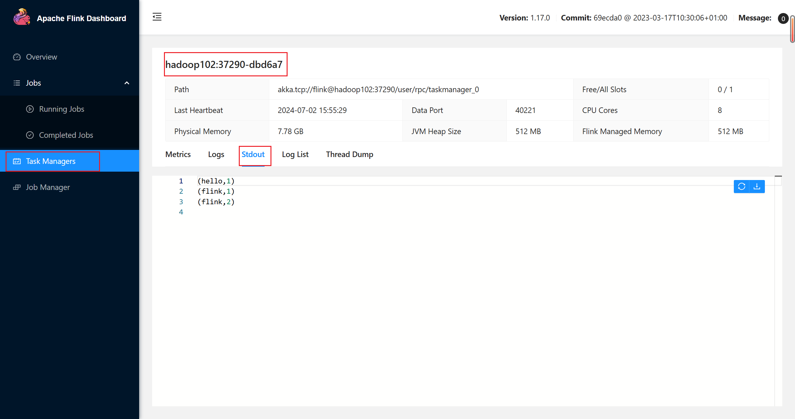
（7）如果希望停掉集群，同样可以使用脚本，命令如下。
1 | [root@hadoop102 flink-1.17.0]# bin/taskmanager.sh stop |
3.5 YARN运行模式（重点）
YARN上部署的过程是：客户端把Flink应用提交给Yarn的ResourceManager，Yarn的ResourceManager会向Yarn的NodeManager申请容器。在这些容器上，Flink会部署JobManager和TaskManager的实例，从而启动集群。Flink会根据运行在JobManger上的作业所需要的Slot数量动态分配TaskManager资源。
3.5.1 相关准备和配置
（1）配置环境变量，增加环境变量配置如下：
1 | [root@hadoop102 flink-1.17.0]# vim /etc/profile.d/my_env.sh |
（2）启动Hadoop集群，包括HDFS和YARN。
1 | [root@hadoop102 flink-1.17.0]# myhadoop.sh start |
（3）在hadoop102中执行以下命令启动netcat。
1 | [root@hadoop102 ~]# nc -lk 7777 |
3.5.2 会话模式部署
YARN的会话模式与独立集群略有不同，需要首先申请一个YARN会话（YARN Session）来启动Flink集群。具体步骤如下：
（1）开启YARN会话，启动flink集群
1 | [root@hadoop102 flink-1.17.0]# bin/yarn-session.sh -nm test |
可用参数解读：
- -d：分离模式，如果你不想让Flink YARN客户端一直前台运行，可以使用这个参数，即使关掉当前对话窗口，YARN session也可以后台运行。
- -jm（–jobManagerMemory）：配置JobManager所需内存，默认单位MB。
- -nm（–name）：配置在YARN UI界面上显示的任务名。
- -qu（–queue）：指定YARN队列名。
- -tm（–taskManager）：配置每个TaskManager所使用内存。
注意：Flink1.11.0版本不再使用-n参数和-s参数分别指定TaskManager数量和slot数量，YARN会按照需求动态分配TaskManager和slot。所以从这个意义上讲，YARN的会话模式也不会把集群资源固定，同样是动态分配的。
查看All Applications可以看到：
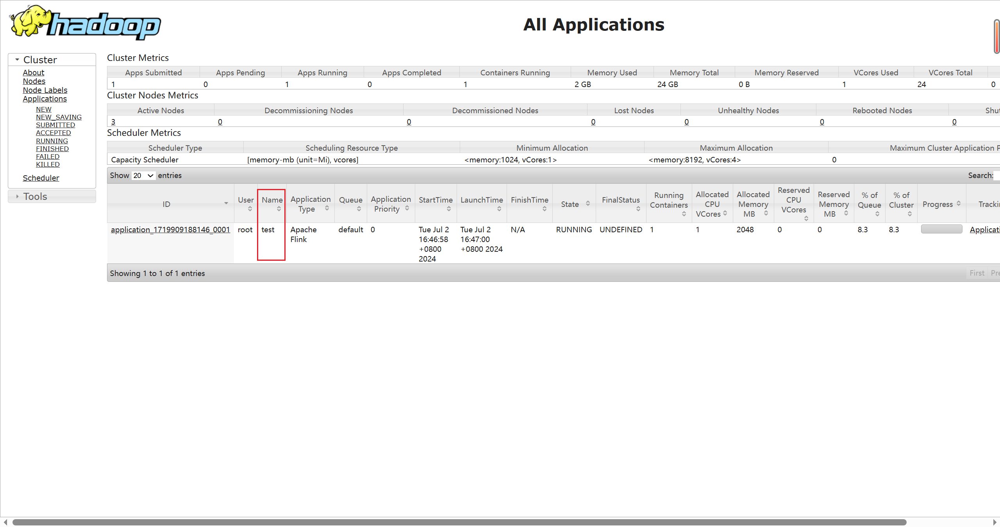
YARN Session启动之后会给出一个Web UI地址以及一个YARN application ID，如下所示，用户可以通过Web UI或者命令行两种方式提交作业。
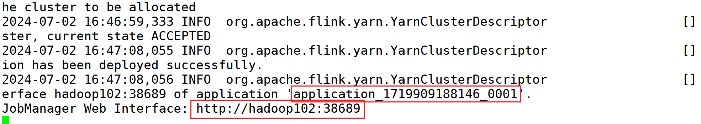
点击网站进入flink WebUI
（2）提交作业
使用WebUI提交作业和Standalone部署模式基本相同，略。
下面介绍通过命令行提交作业
执行以下命令将该任务提交到已经开启的Yarn-Session中运行
1 | [root@hadoop102 flink-1.17.0]# bin/flink run -c com.atguigu.wc.WordCountStreamUnboundedDemo lib/FlinnkTutorial1.17-1.0-SNAPSHOT.jar |
客户端可以自行确定JobManager的地址，也可以通过-m或者-jobmanager参数指定JobManager的地址，JobManager的地址在YARN Session的启动页面中可以找到。会自动找到YARN放在YARN上提交
从上图中可以看到我们创建的Yarn-Session实际上是一个Yarn的Application，并且有唯一的Application ID。每一个flink集群就是Yarn的一个Application
也可以通过Flink的Web UI页面查看提交任务的运行情况，如下图所示
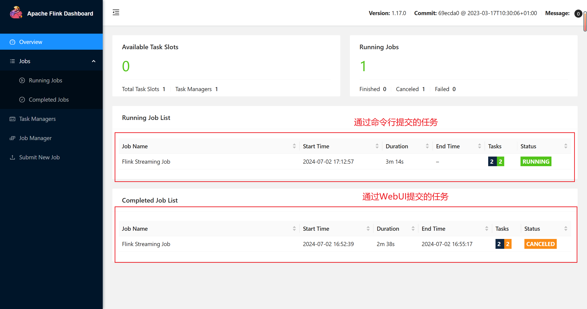
3.5.3 单作业模式部署
不用事先启动flink集群，执行提交jar包作业，提交的同时就会启动flink集群
（1）执行提交命令作业
1 | [root@hadoop102 flink-1.17.0]# bin/flink run -d -t yarn-per-job -c com.atguigu.wc.WordCountStreamUnboundedDemo lib/FlinnkTutorial1.17-1.0-SNAPSHOT.jar |
（2）在YARN的ResourceManager界面查看执行情况。
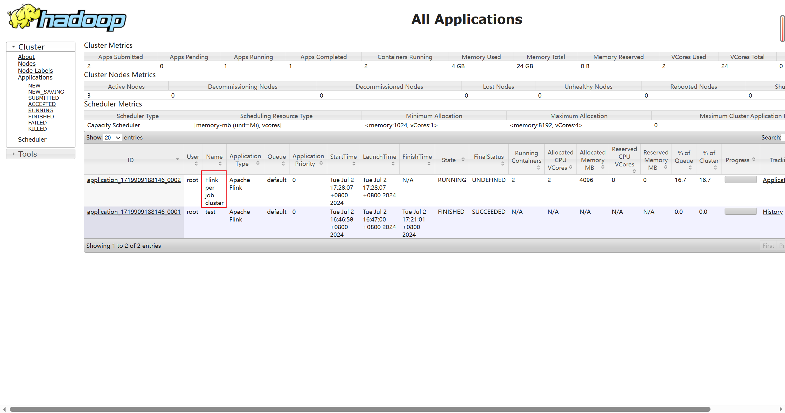
点击可以打开Flink Web UI页面进行监控，如下图所示
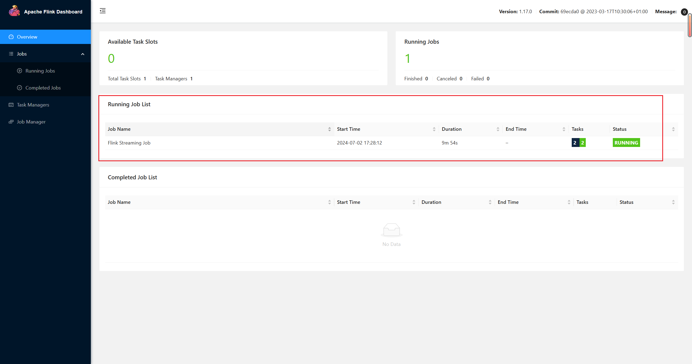
（3）可以使用命令行查看或取消作业，命令如下。
1 | [root@hadoop102 conf]# bin/flink list -t yarn-per-job -Dyarn.application.id=application_1719909188146_0002 |
1 | ------------------ Running/Restarting Jobs ------------------- |
1 | [root@hadoop102 flink-1.17.0]# bin/flink cancel -t yarn-per-job -Dyarn.application.id=application_1719909188146_0002 4c04db8a8463bd97f3177f51f1d640f8 |
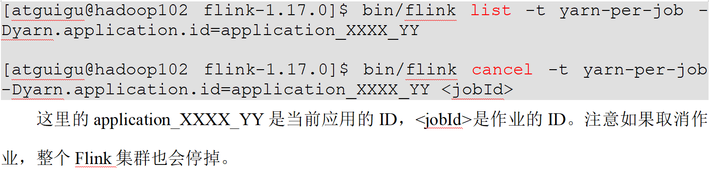
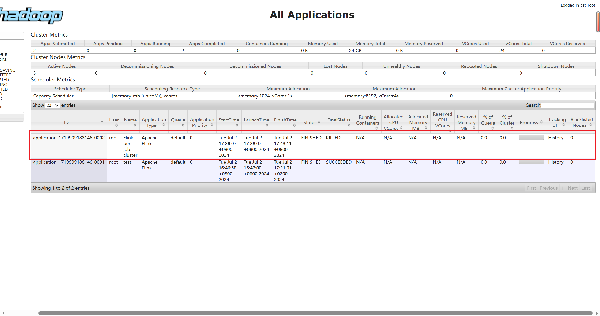
3.5.4 应用模式部署（推荐生产环境中使用）
应用模式同样非常简单，与单作业模式类似，直接执行flink run-application命令即可。
（1）命令行提交
1 | [root@hadoop102 flink-1.17.0]# bin/flink run-application -t yarn-application -c com.atguigu.wc.WordCountStreamUnboundedDemo lib/FlinnkTutorial1.17-1.0-SNAPSHOT.jar |
在命令行中查看或取消作业
1 | [root@hadoop102 flink-1.17.0]# bin/flink list -t yarn-application -Dyarn.application.id=application_XXXX_YY |
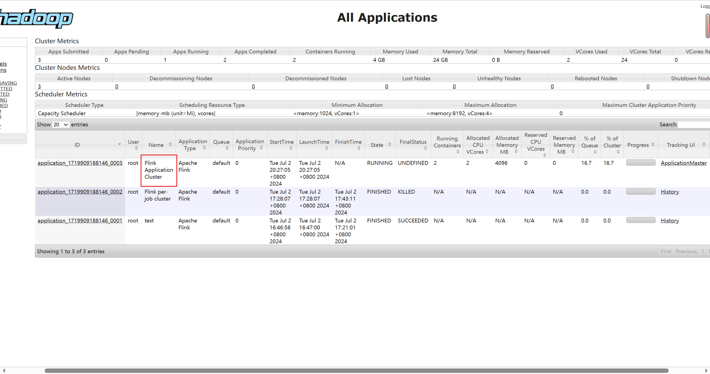
（2）上传HDFS提交
可以通过yarn.provided.lib.dirs配置选项指定位置，将flink的依赖上传到远程
上传flink的lib和plugins到HDFS上
1 | [root@hadoop102 flink-1.17.0]# hadoop fs -mkdir /flink-dist |
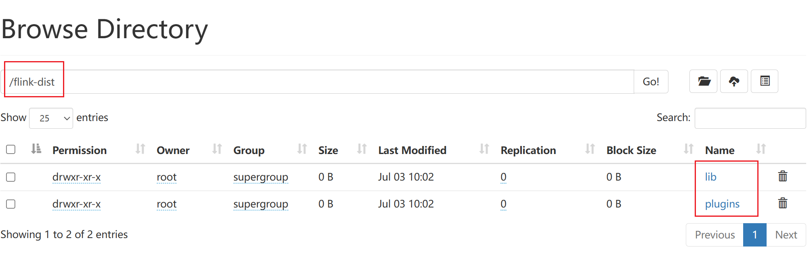
上传自己的jar包到HDFS
1 | [root@hadoop102 flink-1.17.0]# hadoop fs -mkdir /flink-jars |
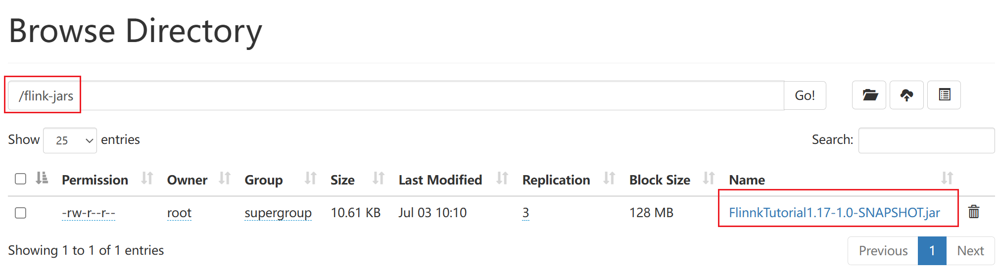
（3）提交作业
1 | [root@hadoop102 flink-1.17.0]# bin/flink run-application -t yarn-application -Dyarn.provided.lib.dirs="hdfs://hadoop102:8020/flink-dist" -c com.atguigu.wc.WordCountStreamUnboundedDemo hdfs://hadoop102:8020/flink-jars/FlinnkTutorial1.17-1.0-SNAPSHOT.jar |
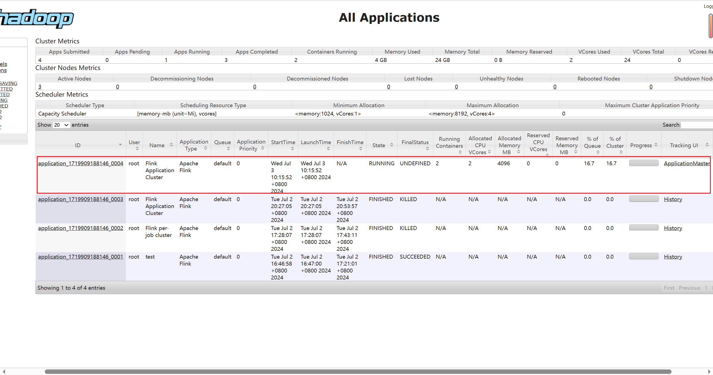
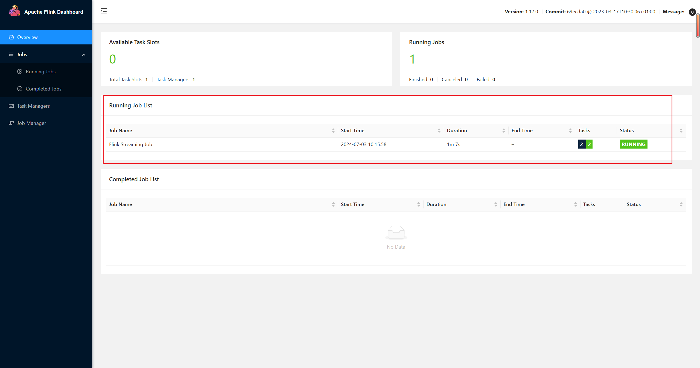
这种方式下，flink本身的依赖和用户jar可以预先上传到HDFS，而不需要单独发送到集群，这就使得作业提交更加轻量了。
3.6 K8S 运行模式（了解）
容器化部署是如今业界流行的一项技术，基于Docker镜像运行能够让用户更加方便地对应用进行管理和运维。容器管理工具中最为流行的就是Kubernetes（k8s），而Flink也在最近的版本中支持了k8s部署模式。基本原理与YARN是类似的，具体配置可以参见官网说明，这里我们就不做过多讲解了。
3.7 历史服务器
运行 Flink job 的集群一旦停止，只能去 yarn 或本地磁盘上查看日志，不再可以查看作业挂掉之前的运行的 Web UI，很难清楚知道作业在挂的那一刻到底发生了什么。如果我们还没有 Metrics 监控的话，那么完全就只能通过日志去分析和定位问题了，所以如果能还原之前的 Web UI，我们可以通过 UI 发现和定位一些问题。
Flink提供了历史服务器，用来在相应的 Flink 集群关闭后查询已完成作业的统计信息。我们都知道只有当作业处于运行中的状态，才能够查看到相关的WebUI统计信息。通过 History Server 我们才能查询这些已完成作业的统计信息，无论是正常退出还是异常退出。
此外，它对外提供了 REST API，它接受 HTTP 请求并使用 JSON 数据进行响应。Flink 任务停止后，JobManager 会将已经完成任务的统计信息进行存档，History Server 进程则在任务停止后可以对任务统计信息进行查询。比如：最后一次的 Checkpoint、任务运行时的相关配置。
（1）创建存储目录
1 | [root@hadoop102 flink-1.17.0]# hadoop fs -mkdir -p /logs/flink-job |
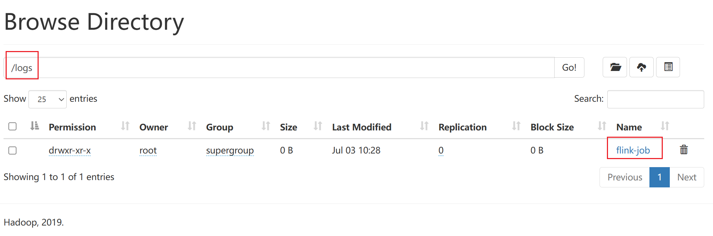
（2）在flink-config.yaml中添加如下配置
1 | jobmanager.archive.fs.dir: hdfs://hadoop102:8020/logs/flink-job |
（3）启动历史服务器
1 | [root@hadoop102 flink-1.17.0]# bin/historyserver.sh start |
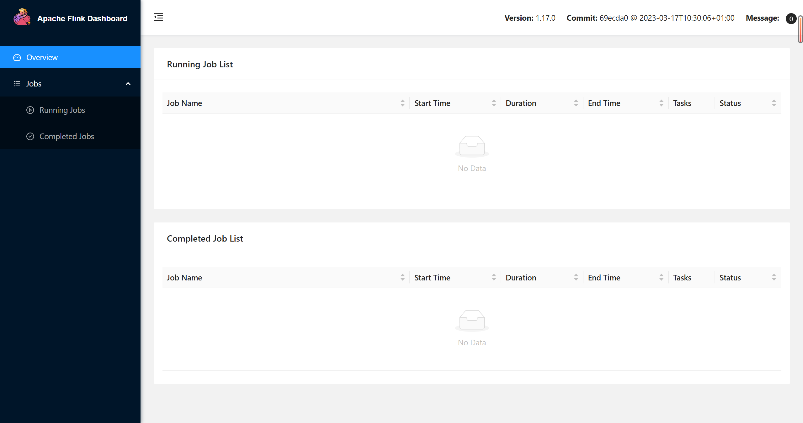
（4）启动一个flink集群
1 | [root@hadoop102 flink-1.17.0]# bin/flink run-application -t yarn-application -c com.atguigu.wc.WordCountStreamUnboundedDemo lib/FlinnkTutorial1.17-1.0-SNAPSHOT.jar |
进入Yarn界面：
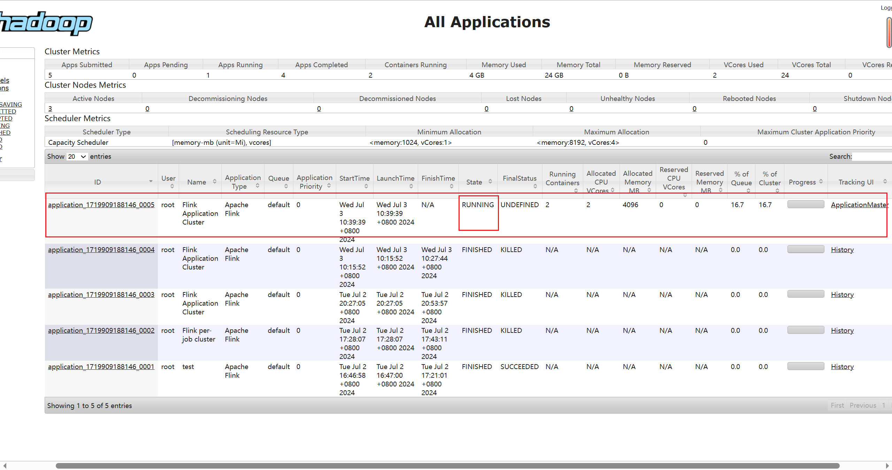
现在取消掉job
在yarn界面点击history进入历史服务器界面
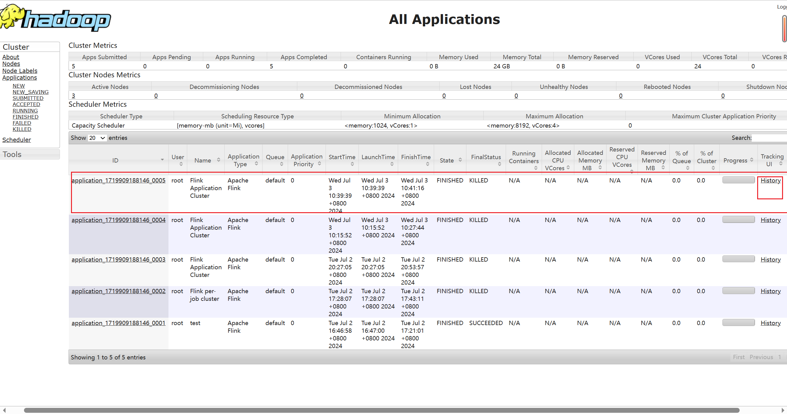
可以看到已经被取消掉的job的历史信息
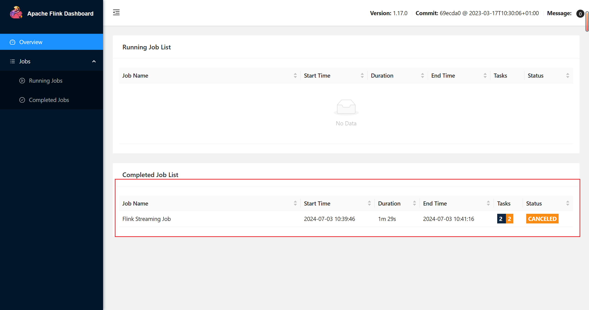
在hdfs上也能看见归档的文件
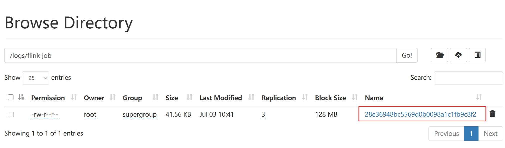
第四章 Flink运行时架构
4.1 系统架构
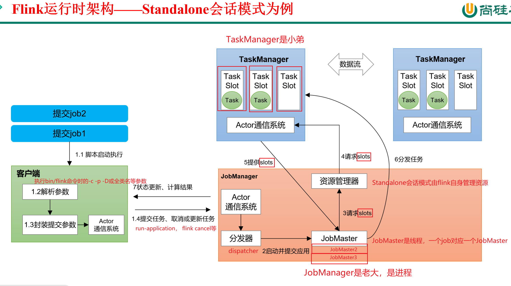
（1）作业管理器（JobManager）
JobManager是一个Flink集群中任务管理和调度的核心，是控制应用执行的主进程。也就是说，每个应用都应该被唯一的JobManager所控制执行。
JobManger又包含3个不同的组件。
1）JobMaster
JobMaster是JobManager中最核心的组件，负责处理单独的作业（Job）。所以JobMaster和具体的Job是一一对应的，多个Job可以同时运行在一个Flink集群中, 每个Job都有一个自己的JobMaster。需要注意在早期版本的Flink中，没有JobMaster的概念；而JobManager的概念范围较小，实际指的就是现在所说的JobMaster。
在作业提交时，JobMaster会先接收到要执行的应用。JobMaster会把JobGraph转换成一个物理层面的数据流图，这个图被叫作“执行图”（ExecutionGraph），它包含了所有可以并发执行的任务。JobMaster会向资源管理器（ResourceManager）发出请求，申请执行任务必要的资源。一旦它获取到了足够的资源，就会将执行图分发到真正运行它们的TaskManager上。
而在运行过程中，JobMaster会负责所有需要中央协调的操作，比如说检查点（checkpoints）的协调。
2）资源管理器（ResourceManager）
ResourceManager主要负责资源的分配和管理，在Flink 集群中只有一个。所谓“资源”，主要是指TaskManager的任务槽（task slots）。任务槽就是Flink集群中的资源调配单元，包含了机器用来执行计算的一组CPU和内存资源。每一个任务（Task）都需要分配到一个slot上执行。
这里注意要把Flink内置的ResourceManager和其他资源管理平台（比如YARN）的ResourceManager区分开。
3）分发器（Dispatcher）
Dispatcher主要负责提供一个REST接口，用来提交应用，并且负责为每一个新提交的作业启动一个新的JobMaster 组件。Dispatcher也会启动一个Web UI，用来方便地展示和监控作业执行的信息。Dispatcher在架构中并不是必需的，在不同的部署模式下可能会被忽略掉。
（2）任务管理器（TaskManager）
TaskManager是Flink中的工作进程，数据流的具体计算就是它来做的。Flink集群中必须至少有一个TaskManager；每一个TaskManager都包含了一定数量的任务槽（task slots）。Slot是资源调度的最小单位，slot的数量限制了TaskManager能够并行处理的任务数量。
启动之后，TaskManager会向资源管理器注册它的slots；收到资源管理器的指令后，TaskManager就会将一个或者多个槽位提供给JobMaster调用，JobMaster就可以分配任务来执行了。
在执行过程中，TaskManager可以缓冲数据，还可以跟其他运行同一应用的TaskManager交换数据。
4.2 核心概念
4.2.1 并行度（Parallelism）
4.2.1.1 并行子任务和并行度
当要处理的数据量非常大时，我们可以把一个算子操作，“复制”多份到多个节点，数据来了之后就可以到其中任意一个执行。这样一来，一个算子任务就被拆分成了多个并行的“子任务”（subtasks），再将它们分发到不同节点，就真正实现了并行计算。
在Flink执行过程中，每一个算子（operator）可以包含一个或多个子任务（operator subtask），这些子任务在不同的线程、不同的物理机或不同的容器中完全独立地执行。
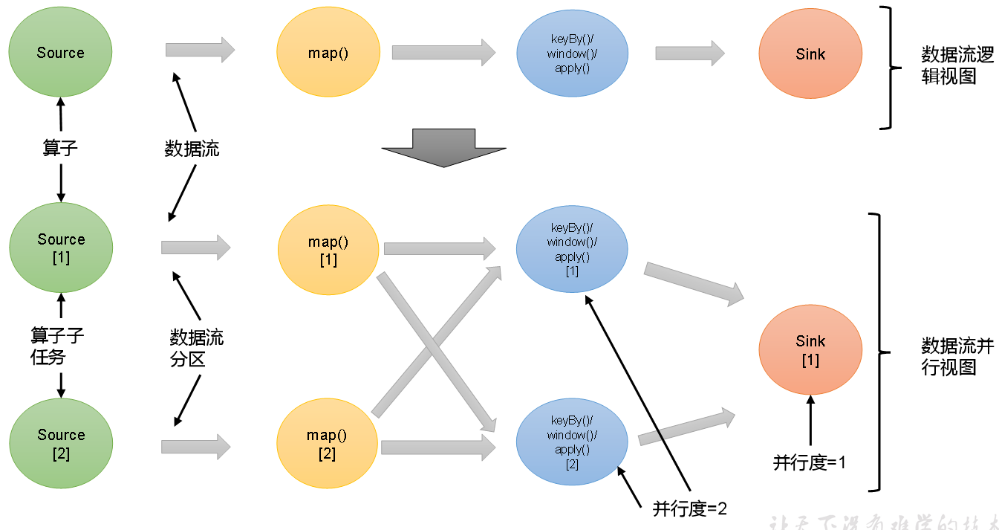
一个特定算子的子任务（subtask）的个数被称之为其并行度（parallelism）。这样，包含并行子任务的数据流，就是并行数据流，它需要多个分区（stream partition）来分配并行任务。一般情况下，一个流程序的并行度，可以认为就是其所有算子中最大的并行度。一个程序中，不同的算子可能具有不同的并行度。
例如：如上图所示，当前数据流中有source、map、window、sink四个算子，其中sink算子的并行度为1，其他算子的并行度都为2。所以这段流处理程序的并行度就是2。
4.2.1.2 并行度的设置
在Flink中，可以用不同的方法来设置并行度，它们的有效范围和优先级别也是不同的。
（1）代码中设置
我们在代码中，可以很简单地在算子后跟着调用setParallelism()方法，来设置当前算子的并行度：
以下代码使用WebUI配置，使得在IDEA写的代码也能直接通过WebUI查看job
1 | public class WordCountStreamUnboundedDemo { |
点击Apache Flink Web Dashboard查看WebUI
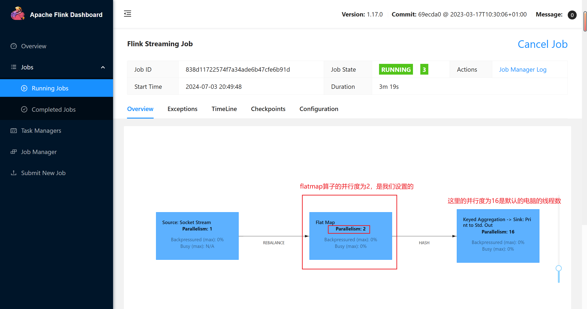
这种方式设置的并行度，只针对当前算子有效。
另外，我们也可以直接调用执行环境的setParallelism()方法，全局设定并行度：
1 | env.setParallelism(3); |
1 | public class WordCountStreamUnboundedDemo { |
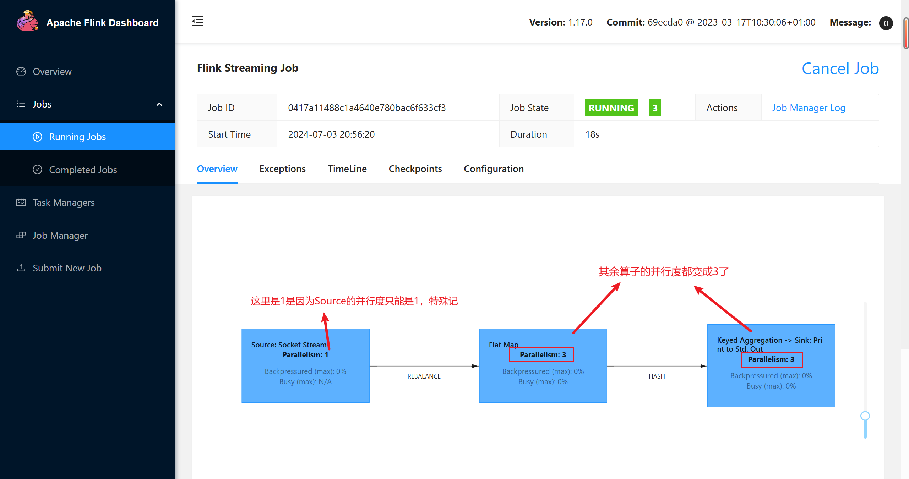
注意：算子的并行度优先级高于env全局指定
我们一般不会在程序中设置全局并行度，因为如果在程序中对全局并行度进行硬编码，会导致无法动态扩容。
这里要注意的是，由于keyBy不是算子，所以无法对keyBy设置并行度。
（2）提交应用时设置
在使用flink run命令提交应用时，可以增加-p参数来指定当前应用程序执行的并行度，它的作用类似于执行环境的全局设置：
1 | [root@hadoop102 flink-1.17.0]# bin/flink run -p 2 -c com.atguigu.wc.WordCountStreamUnboundedDemo lib/FlinnkTutorial1.17-1.0-SNAPSHOT.jar |
如果我们直接在Web UI上提交作业，也可以在对应输入框中直接添加并行度。

注意：在代码中算子的优先级>代码中env全局指定优先级>提交-p的优先级>配置文件
4.2.2 算子链（Operator Chain）
4.2.2.1 算子间的数据传输
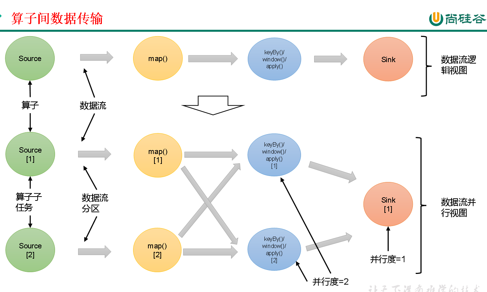
一个数据流在算子之间传输数据的形式可以是一对一（one-to-one）的直通（forwarding）模式，也可以是打乱的重分区（redistributing）模式，具体是哪一种形式，取决于算子的种类。
（1）一对一（One-to-one，forwarding）
这种模式下，数据流维护着分区以及元素的顺序。比如图中的source和map算子，source算子读取数据之后，可以直接发送给map算子做处理，它们之间不需要重新分区，也不需要调整数据的顺序。这就意味着map 算子的子任务，看到的元素个数和顺序跟source 算子的子任务产生的完全一样，保证着“一对一”的关系。map、filter、flatMap等算子都是这种one-to-one的对应关系。这种关系类似于Spark中的窄依赖。
（2）重分区（Redistributing）
在这种模式下，数据流的分区会发生改变。比如图中的map和后面的keyBy/window算子之间，以及keyBy/window算子和Sink算子之间，都是这样的关系。
每一个算子的子任务，会根据数据传输的策略，把数据发送到不同的下游目标任务。这些传输方式都会引起重分区的过程，这一过程类似于Spark中的shuffle。
4.2.2.2 合并算子链
在Flink中，并行度相同的一对一（one to one）算子操作，可以直接链接在一起形成一个“大”的任务（task），这样原来的算子就成为了真正任务里的一部分，如下图所示。每个task会被一个线程执行。这样的技术被称为“算子链”（Operator Chain）。
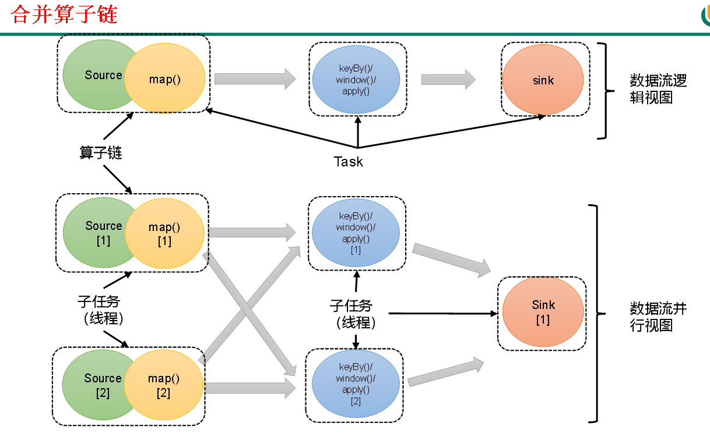上图中Source和map之间满足了算子链的要求，所以可以直接合并在一起，形成了一个任务；因为并行度为2，所以合并后的任务也有两个并行子任务。这样，这个数据流图所表示的作业最终会有5个任务，由5个线程并行执行。
将算子链接成task是非常有效的优化：可以减少线程之间的切换和基于缓存区的数据交换，在减少时延的同时提升吞吐量。
Flink默认会按照算子链的原则进行链接合并，如果我们想要禁止合并或者自行定义，也可以在代码中对算子做一些特定的设置：
1 | // 禁用算子链 |
举个例子：
1 | public class UnboundedStreamOperatorChainDemo { |
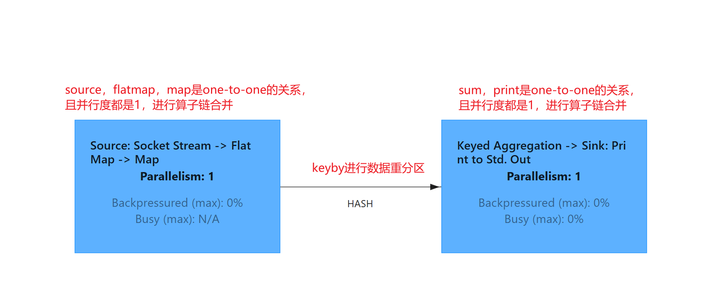
1 | //执行全局禁用算子链 |
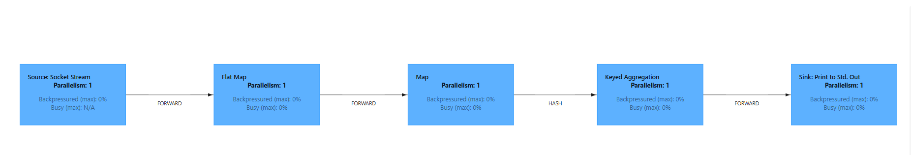
1 | // 禁用某个算子的算子链 |
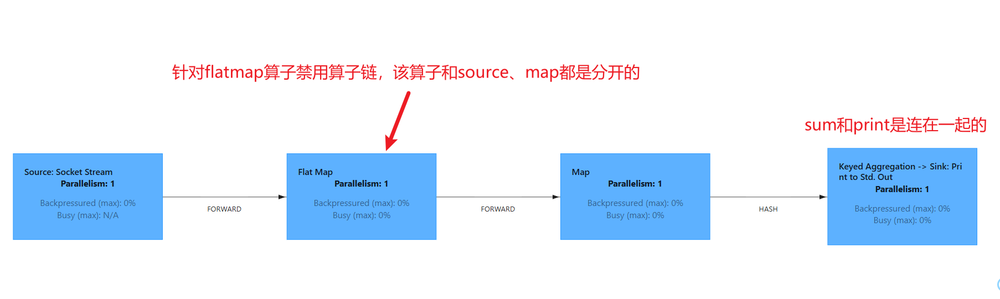
1 | // 从当前算子开始新链 |
总结：
- 全局禁用算子链：env.disableOperatorChaining();
- 某个算子不参与链化：算子A.disableChaining(), 算子A不会与前面和后面的算子串在一起
- 从某个算子开启新链条：算子A.startNewChain()，算子A不与前面串在一起，从A开始正常链化
4.2.3 任务槽（Task Slots）
（1）任务槽
Flink中每一个TaskManager都是一个JVM进程，它可以启动多个独立的线程，来并行执行多个子任务（subtask）。
很显然，TaskManager的计算资源是有限的，并行的任务越多，每个线程的资源就会越少。那一个TaskManager到底能并行处理多少个任务呢？为了控制并发量，我们需要在TaskManager上对每个任务运行所占用的资源做出明确的划分，这就是所谓的任务槽（task slots）。
每个任务槽（task slot）其实表示了TaskManager拥有计算资源的一个固定大小的子集。这些资源就是用来独立执行一个子任务的。
（2）任务槽数量的设置
在Flink的/opt/module/flink-1.17.0/conf/flink-conf.yaml配置文件中，可以设置TaskManager的slot数量，默认是1个slot。
1 | taskmanager.numberOfTaskSlots: 8 |
需要注意的是，slot目前仅仅用来隔离内存，不会涉及CPU的隔离。在具体应用时，可以将slot数量配置为机器的CPU核心数，尽量避免不同任务之间对CPU的竞争。这也是开发环境默认并行度设为机器CPU数量的原因。
（3）任务对任务槽的共享
默认情况下，Flink是允许子任务共享slot的。如果我们保持sink任务并行度为1不变，而作业提交时设置全局并行度为6，那么前两个任务节点就会各自有6个并行子任务，整个流处理程序则有13个子任务。如上图所示，只要属于同一个作业，那么对于不同任务节点（算子）的并行子任务，就可以放到同一个slot上执行。所以对于第一个任务节点source→map，它的6个并行子任务必须分到不同的slot上，而第二个任务节点keyBy/window/apply的并行子任务却可以和第一个任务节点source→map共享slot。
当我们将资源密集型和非密集型的任务同时放到一个slot中，它们就可以自行分配对资源占用的比例，从而保证最重的活平均分配给所有的TaskManager。
slot共享另一个好处就是允许我们保存完整的作业管道。这样一来，即使某个TaskManager出现故障宕机，其他节点也可以完全不受影响，作业的任务可以继续执行。
当然，Flink默认是允许slot共享的，如果希望某个算子对应的任务完全独占一个slot，或者只有某一部分算子共享slot，我们也可以通过设置“slot共享组”手动指定：
1 | .map(word -> Tuple2.of(word, 1L)).slotSharingGroup("1"); |
这样，只有属于同一个slot共享组的子任务，才会开启slot共享；不同组之间的任务是完全隔离的，必须分配到不同的slot上。在这种场景下，总共需要的slot数量，就是各个slot共享组最大并行度的总和。
1 | SingleOutputStreamOperator<Tuple2<String, Integer>> sum = socketDS.flatMap( |
4.2.4 任务槽和并行度的关系
任务槽和并行度都跟程序的并行执行有关，但两者是完全不同的概念。简单来说任务槽是静态的概念，是指TaskManager具有的并发执行能力，可以通过参数taskmanager.numberOfTaskSlots进行配置；而并行度是动态概念，也就是TaskManager运行程序时实际使用的并发能力，可以通过参数parallelism.default进行配置。
举例说明：假设一共有3个TaskManager，每一个TaskManager中的slot数量设置为3个，那么一共有9个task slot，表示集群最多能并行执行9个同一算子的子任务。
而我们定义word count程序的处理操作是四个转换算子：
source→ flatmap→ reduce→ sink
当所有算子并行度相同时，容易看出source和flatmap可以合并算子链，于是最终有三个任务节点。
slot数量与并行度的关系
- slot是一种静态的概念，表示最大的并发上限
- 并行度是一种动态的概念，表示实际运行占用了几个
- 要求：slot数量 >= job并行度（算子最大并行度），job才能运行
- 如果是yarn模式，动态申请，申请TaskManager的数量 = job并行度 / 每个TM的slot数量，向上取整
4.3 作业的提交流程
4.3.1 Standalone会话模式作业提交流程
4.3.2 逻辑流图/作业图/执行图/物理流图
我们已经彻底了解了由代码生成任务的过程，现在来做个梳理总结。
逻辑流图（StreamGraph）→ 作业图（JobGraph）→ 执行图（ExecutionGraph）→ 物理图（Physical Graph）。
1）逻辑流图（StreamGraph）
这是根据用户通过 DataStream API编写的代码生成的最初的DAG图，用来表示程序的拓扑结构。这一步一般在客户端完成。
2）作业图（JobGraph）
StreamGraph经过优化后生成的就是作业图（JobGraph），这是提交给 JobManager 的数据结构，确定了当前作业中所有任务的划分。主要的优化为：将多个符合条件的节点链接在一起合并成一个任务节点，形成算子链，这样可以减少数据交换的消耗。JobGraph一般也是在客户端生成的，在作业提交时传递给JobMaster。
我们提交作业之后，打开Flink自带的Web UI，点击作业就能看到对应的作业图。
3）执行图（ExecutionGraph）（最重要）
JobMaster收到JobGraph后，会根据它来生成执行图（ExecutionGraph）。ExecutionGraph是JobGraph的并行化版本，是调度层最核心的数据结构。与JobGraph最大的区别就是按照并行度对并行子任务进行了拆分，并明确了任务间数据传输的方式。
4）物理图（Physical Graph）
JobMaster生成执行图后，会将它分发给TaskManager；各个TaskManager会根据执行图部署任务，最终的物理执行过程也会形成一张“图”，一般就叫作物理图（Physical Graph）。这只是具体执行层面的图，并不是一个具体的数据结构。
物理图主要就是在执行图的基础上，进一步确定数据存放的位置和收发的具体方式。有了物理图，TaskManager就可以对传递来的数据进行处理计算了。
4.3.3 Yarn应用模式作业提交流程
第五章 DataStream API
DataStream API是Flink的核心层API。一个Flink程序，其实就是对DataStream的各种转换。具体来说，代码基本上都由以下几部分构成：
5.1 执行环境（Execution Environment）
Flink程序可以在各种上下文环境中运行：我们可以在本地JVM中执行程序，也可以提交到远程集群上运行。
不同的环境，代码的提交运行的过程会有所不同。这就要求我们在提交作业执行计算时，首先必须获取当前Flink的运行环境，从而建立起与Flink框架之间的联系。
5.1.1 创建执行环境
我们要获取的执行环境，是StreamExecutionEnvironment类的对象，这是所有Flink程序的基础。在代码中创建执行环境的方式，就是调用这个类的静态方法，具体有以下三种。
1）getExecutionEnvironment（开发用这个）
最简单的方式，就是直接调用getExecutionEnvironment方法。它会根据当前运行的上下文直接得到正确的结果：如果程序是独立运行的，就返回一个本地执行环境；如果是创建了jar包，然后从命令行调用它并提交到集群执行，那么就返回集群的执行环境。也就是说，这个方法会根据当前运行的方式，自行决定该返回什么样的运行环境。这种方式，用起来简单高效，是最常用的一种创建执行环境的方式。
1 | StreamExecutionEnvironment env = StreamExecutionEnvironment.getExecutionEnvironment(); |
2）createLocalEnvironment
这个方法返回一个本地执行环境。可以在调用时传入一个参数，指定默认的并行度；如果不传入，则默认并行度就是本地的CPU核心数。
1 | LocalStreamEnvironment env1 = StreamExecutionEnvironment.createLocalEnvironment(); |
3）createRemoteEnvironment
这个方法返回集群执行环境。需要在调用时指定JobManager的主机名和端口号，并指定要在集群中运行的Jar包。
1 | StreamExecutionEnvironment env2 = StreamExecutionEnvironment |
在获取到程序执行环境后，我们还可以对执行环境进行灵活的设置。比如可以全局设置程序的并行度、禁用算子链，还可以定义程序的时间语义、配置容错机制。
5.1.2 执行模式
从Flink 1.12开始，官方推荐的做法是直接使用DataStream API，在提交任务时通过将执行模式设为BATCH来进行批处理。不建议使用DataSet API。
DataStream API执行模式包括：流执行模式、批执行模式和自动模式。实际应用中一般不会在代码中配置，而是使用命令行，这样更加灵活。
- 流执行模式（Streaming）
这是DataStream API最经典的模式，一般用于需要持续实时处理的无界数据流。默认情况下，程序使用的就是Streaming执行模式。
1 | env.setRuntimeMode(RuntimeExecutionMode.STREAMING); |
1 | bin/flink run -Dexecution.runtime-mode=STREAMING ... |
- 批执行模式（Batch）
专门用于批处理的执行模式。
1 | env.setRuntimeMode(RuntimeExecutionMode.BATCH); |
1 | bin/flink run -Dexecution.runtime-mode=BATCH ... |
- 自动模式（AutoMatic）
在这种模式下，将由程序根据输入数据源是否有界，来自动选择执行模式。
1 | env.setRuntimeMode(RuntimeExecutionMode.AUTOMATIC); |
1 | bin/flink run -Dexecution.runtime-mode=AUTOMATIC ... |
5.1.3 触发程序执行
需要注意的是，写完输出（sink）操作并不代表程序已经结束。因为当main()方法被调用时，其实只是定义了作业的每个执行操作，然后添加到数据流图中；这时并没有真正处理数据——因为数据可能还没来。Flink是由事件驱动的，只有等到数据到来，才会触发真正的计算，这也被称为“延迟执行”或“懒执行”。
所以我们需要显式地调用执行环境的execute()方法，来触发程序执行。execute()方法将一直等待作业完成，然后返回一个执行结果（JobExecutionResult）。
1 | //默认env.execute()触发一个flink job，一个main方法可以调用多个execute，但是没意义，指定到第一个就会阻塞住 |
5.2 源算子
Flink可以从各种来源获取数据，然后构建DataStream进行转换处理。一般将数据的输入来源称为数据源（data source），而读取数据的算子就是源算子（source operator）。所以，source就是我们整个处理程序的输入端。
从Flink1.12开始，主要使用流批统一的新Source架构：
1 | DataStreamSource<String> stream = env.fromSource(…) |
Flink直接提供了很多预实现的接口，此外还有很多外部连接工具也帮我们实现了对应的Source，通常情况下足以应对我们的实际需求。
5.2.1 准备工作
WaterSensor类
| 字段名 | 数据类型 | 说明 |
|---|---|---|
| id | String | 水位传感器类型 |
| ts | Long | 传感器记录时间戳 |
| vc | Integer | 水位记录 |
1 | public class WaterSensor { |
这里需要注意，我们定义的WaterSensor，有这样几个特点：
- 类是公有（public）的
- 有一个无参的构造方法
- 所有属性都是公有（public）的
- 所有属性的类型都是可以序列化的
Flink会把这样的类作为一种特殊的POJO（Plain Ordinary Java Object简单的Java对象，实际就是普通JavaBeans）数据类型来对待，方便数据的解析和序列化。另外我们在类中还重写了toString方法，主要是为了测试输出显示更清晰。
我们这里自定义的POJO类会在后面的代码中频繁使用，所以在后面的代码中碰到，把这里的POJO类导入就好了。
5.2.2 从集合中读取数据
最简单的读取数据的方式，就是在代码中直接创建一个Java集合，然后调用执行环境的fromCollection方法进行读取。这相当于将数据临时存储到内存中，形成特殊的数据结构后，作为数据源使用，一般用于测试。
1 | StreamExecutionEnvironment env = StreamExecutionEnvironment.getExecutionEnvironment(); |
1 | 16> 4 |
注意：前面的数字代表并行度编号
5.2.3 从文件读取数据
真正的实际应用中，自然不会直接将数据写在代码中。通常情况下，我们会从存储介质中获取数据，一个比较常见的方式就是读取日志文件。这也是批处理中最常见的读取方式。
读取文件，需要添加文件连接器依赖:
1 | <dependency> |
1 | public static void main(String[] args) throws Exception { |
1 | hello flink |
说明：
- 参数可以是目录，也可以是文件；还可以从HDFS目录下读取，使用路径hdfs://…；
- 路径可以是相对路径，也可以是绝对路径；
- 相对路径是从系统属性user.dir获取路径：idea下是project的根目录，standalone模式下是集群节点根目录；
5.2.4 从Socket读取数据
不论从集合还是文件，我们读取的其实都是有界数据。在流处理的场景中，数据往往是无界的。
我们之前用到的读取socket文本流，就是流处理场景。但是这种方式由于吞吐量小、稳定性较差，一般也是用于测试。
1 | DataStream<String> stream = env.socketTextStream("hadoop102", 7777); |
5.2.5 从Kafka读取数据
Flink官方提供了连接工具flink-connector-kafka，直接帮我们实现了一个消费者FlinkKafkaConsumer，它就是用来读取Kafka数据的SourceFunction。
所以想要以Kafka作为数据源获取数据，我们只需要引入Kafka连接器的依赖。Flink官方提供的是一个通用的Kafka连接器，它会自动跟踪最新版本的Kafka客户端。目前最新版本只支持0.10.0版本以上的Kafka。这里我们需要导入的依赖如下。
1 | <dependency> |
开启zookeeper和kafka
1 | [root@hadoop102 ~]# zk.sh start |
开启Kafka生产者
1 | [root@hadoop102 ~]# kafka-console-producer.sh --broker-list hadoop102:9092 --topic topic_1 |
运行如下代码：
1 | public static void main(String[] args) throws Exception { |
在kafka生产者端输入数据在flink消费者端就能收到数据
1 | [root@hadoop102 ~]# kafka-console-producer.sh --broker-list hadoop102:9092 --topic topic_1 |
5.2.6 从数据生成器读取数据
Flink从1.11开始提供了一个内置的DataGen 连接器，主要是用于生成一些随机数，用于在没有数据源的时候，进行流任务的测试以及性能测试等。1.17提供了新的Source写法，需要导入依赖：
1 | <dependency> |
1 | public static void main(String[] args) throws Exception { |
1 | Number:0 |
注意：如果想要无界流的效果，可以将第三个参数设置为Long.MAX_VALUE
5.2.7 Flink支持的数据类型
5.2.7.1 Flink的类型系统
Flink使用“类型信息”（TypeInformation）来统一表示数据类型。TypeInformation类是Flink中所有类型描述符的基类。它涵盖了类型的一些基本属性，并为每个数据类型生成特定的序列化器、反序列化器和比较器。
5.2.7.2 Flink支持的数据类型
对于常见的Java和Scala数据类型，Flink都是支持的。Flink在内部，Flink对支持不同的类型进行了划分，这些类型可以在Types工具类中找到：
（1）基本类型
所有Java基本类型及其包装类，再加上Void、String、Date、BigDecimal和BigInteger。
（2）数组类型
包括基本类型数组（PRIMITIVE_ARRAY）和对象数组（OBJECT_ARRAY）。
（3）复合数据类型
Java元组类型（TUPLE）：这是Flink内置的元组类型，是Java API的一部分。最多25个字段，也就是从Tuple0~Tuple25，不支持空字段。
Scala 样例类及Scala元组：不支持空字段。
行类型（ROW）：可以认为是具有任意个字段的元组，并支持空字段。
POJO：Flink自定义的类似于Java bean模式的类。
（4）辅助类型
Option、Either、List、Map等。
（5）泛型类型（GENERIC）
Flink支持所有的Java类和Scala类。不过如果没有按照上面POJO类型的要求来定义，就会被Flink当作泛型类来处理。Flink会把泛型类型当作黑盒，无法获取它们内部的属性；它们也不是由Flink本身序列化的，而是由Kryo序列化的。
在这些类型中，元组类型和POJO类型最为灵活，因为它们支持创建复杂类型。而相比之下，POJO还支持在键（key）的定义中直接使用字段名，这会让我们的代码可读性大大增加。所以，在项目实践中，往往会将流处理程序中的元素类型定为Flink的POJO类型。
Flink对POJO类型的要求如下：
类是公有（public）的
有一个无参的构造方法（构造器）
所有属性都是公有（public）的
所有属性的类型都是可以序列化的
5.2.7.3 类型提示（Type Hints）
Flink还具有一个类型提取系统，可以分析函数的输入和返回类型，自动获取类型信息，从而获得对应的序列化器和反序列化器。但是，由于Java中泛型擦除的存在，在某些特殊情况下（比如Lambda表达式中），自动提取的信息是不够精细的——只告诉Flink当前的元素由“船头、船身、船尾”构成，根本无法重建出“大船”的模样；这时就需要显式地提供类型信息，才能使应用程序正常工作或提高其性能。
为了解决这类问题，Java API提供了专门的“类型提示”（type hints）。
回忆一下之前的word count流处理程序，我们在将String类型的每个词转换成（word， count）二元组后，就明确地用returns指定了返回的类型。因为对于map里传入的Lambda表达式，系统只能推断出返回的是Tuple2类型，而无法得到Tuple2<String, Long>。只有显式地告诉系统当前的返回类型，才能正确地解析出完整数据。
1 | .map(word -> Tuple2.of(word, 1L)) |
Flink还专门提供了TypeHint类，它可以捕获泛型的类型信息，并且一直记录下来，为运行时提供足够的信息。我们同样可以通过.returns()方法，明确地指定转换之后的DataStream里元素的类型。
1 | returns(new TypeHint<Tuple2<Integer, SomeType>>(){}) |
之前的写法：
1 | SingleOutputStreamOperator<Tuple2<String, Integer>> sum = socketDS.flatMap( |
type hints写法
1 | SingleOutputStreamOperator<Tuple2<String, Integer>> sum = socketDS.flatMap( |
5.3 转换算子（Transformation）
数据源读入数据之后，我们就可以使用各种转换算子，将一个或多个DataStream转换为新的DataStream。
5.3.1 基本转换算子（map/filter/flatMap）
（1） 映射（map）
map是大家非常熟悉的大数据操作算子，主要用于将数据流中的数据进行转换，形成新的数据流。简单来说，就是一个“一一映射”，消费一个元素就产出一个元素。
注意：不一定输入和输出的数据类型就相同，map就是输入1输出1，数对上就行，可能输入一只猫输出来一条狗
我们只需要基于DataStream调用map()方法就可以进行转换处理。方法需要传入的参数是接口MapFunction的实现；返回值类型还是DataStream，不过泛型（流中的元素类型）可能改变。
下面的代码用不同的方式，实现了提取WaterSensor中的id字段的功能。
1 | //TODO 1 获取数据源 |
1 | //TODO 2 使用map算子提取每条WaterSensor数据的id并做打印 |
1 | //方式2：使用lambda表达式 |
1 | //方式3：定义一个类来实现MapFunction接口 |
上面代码中，MapFunction实现类的泛型类型，与输入数据类型和输出数据的类型有关。在实现MapFunction接口的时候，需要指定两个泛型，分别是输入事件和输出事件的类型，还需要重写一个map()方法，定义从一个输入事件转换为另一个输出事件的具体逻辑。
（2） 过滤（filter）
filter转换操作，顾名思义是对数据流执行一个过滤，通过一个布尔条件表达式设置过滤条件，对于每一个流内元素进行判断，若为true则元素正常输出，若为false则元素被过滤掉。
进行filter转换之后的新数据流的数据类型与原数据流是相同的。filter转换需要传入的参数需要实现FilterFunction接口，而FilterFunction内要实现filter()方法，就相当于一个返回布尔类型的条件表达式。
1 | /** |
1 | WaterSensor{id='sensor_1', ts=1, vc=20} |
（3） 扁平映射（flatMap）
flatMap操作又称为扁平映射，主要是将数据流中的整体（一般是集合类型）拆分成一个一个的个体使用。消费一个元素，可以产生0到多个元素。flatMap可以认为是“扁平化”（flatten）和“映射”（map）两步操作的结合，也就是先按照某种规则对数据进行打散拆分，再对拆分后的元素做转换处理。
同map一样，flatMap也可以使用Lambda表达式或者FlatMapFunction接口实现类的方式来进行传参，返回值类型取决于所传参数的具体逻辑，可以与原数据流相同，也可以不同。
1 | /** |
1 | 20 |
map怎么控制一进一出：return
flatmap怎么控制一进多出：通过Collector来输出，调用几次就输出几条
5.3.2 聚合算子（Aggregation）
计算的结果不仅依赖当前数据，还跟之前的数据有关，相当于要把所有数据聚在一起进行汇总合并——这就是所谓的“聚合”（Aggregation），类似于MapReduce中的reduce操作。
（1） 按键分区（keyBy）
对于Flink而言，DataStream是没有直接进行聚合的API的。因为我们对海量数据做聚合肯定要进行分区并行处理，这样才能提高效率。所以在Flink中，要做聚合，需要先进行分区；这个操作就是通过keyBy来完成的。
keyBy是聚合前必须要用到的一个算子。keyBy通过指定键（key），可以将一条流从逻辑上划分成不同的分区（partitions）。这里所说的分区，其实就是并行处理的子任务。
基于不同的key，流中的数据将被分配到不同的分区中去；这样一来，所有具有相同的key的数据，都将被发往同一个分区。
在内部，是通过计算key的哈希值（hash code），对分区数进行取模运算来实现的。所以这里key如果是POJO的话，必须要重写hashCode()方法。
keyBy()方法需要传入一个参数，这个参数指定了一个或一组key。有很多不同的方法来指定key：比如对于Tuple数据类型，可以指定字段的位置或者多个位置的组合；对于POJO类型，可以指定字段的名称（String）；另外，还可以传入Lambda表达式或者实现一个键选择器（KeySelector），用于说明从数据中提取key的逻辑。
1 | public class KeybyDemo { |
1 | 1> WaterSensor{id='sensor_2', ts=2, vc=39} |
（2）简单聚合（sum/min/max/minBy/maxBy）
有了按键分区的数据流KeyedStream，我们就可以基于它进行聚合操作了。Flink为我们内置实现了一些最基本、最简单的聚合API，主要有以下几种：
- sum()：在输入流上，对指定的字段做叠加求和的操作。
- min()：在输入流上，对指定的字段求最小值。
- max()：在输入流上，对指定的字段求最大值。
- minBy()：与min()类似，在输入流上针对指定字段求最小值。不同的是，min()只计算指定字段的最小值，其他字段会保留最初第一个数据的值；而minBy()则会返回包含字段最小值的整条数据。
- maxBy()：与max()类似，在输入流上针对指定字段求最大值。两者区别与min()/minBy()完全一致。
简单聚合算子使用非常方便，语义也非常明确。这些聚合方法调用时，也需要传入参数；但并不像基本转换算子那样需要实现自定义函数，只要说明聚合指定的字段就可以了。指定字段的方式有两种：指定位置，和指定名称。
对于元组类型的数据，可以使用这两种方式来指定字段。需要注意的是，元组中字段的名称，是以f0、f1、f2、…来命名的。
如果数据流的类型是POJO类，那么就只能通过字段名称来指定，不能通过位置来指定了。
1 | public static void main(String[] args) throws Exception { |
1 | WaterSensor{id='sensor_1', ts=1, vc=20} |
1 | sensorKS.min("vc").print(); |
1 | WaterSensor{id='sensor_1', ts=1, vc=20} |
1 | sensorKS.max("vc").print(); |
1 | WaterSensor{id='sensor_1', ts=1, vc=20} |
1 | /** |
1 | WaterSensor{id='sensor_1', ts=1, vc=20} |
1 | sensorKS.maxBy("vc").print(); |
1 | WaterSensor{id='sensor_1', ts=1, vc=20} |
简单聚合算子返回的，同样是一个SingleOutputStreamOperator，也就是从KeyedStream又转换成了常规的DataStream。所以可以这样理解：keyBy和聚合是成对出现的，先分区、后聚合，得到的依然是一个DataStream。而且经过简单聚合之后的数据流，元素的数据类型保持不变。
1 | SingleOutputStreamOperator<WaterSensor> maxByDS = sensorKS.maxBy("vc"); |
一个聚合算子，会为每一个key保存一个聚合的值，在Flink中我们把它叫作“状态”（state）。所以每当有一个新的数据输入，算子就会更新保存的聚合结果，并发送一个带有更新后聚合值的事件到下游算子。对于无界流来说，这些状态是永远不会被清除的，所以我们使用聚合算子，应该只用在含有有限个key的数据流上。
（3）归约聚合（reduce）
reduce可以对已有的数据进行归约处理，把每一个新输入的数据和当前已经归约出来的值，再做一个聚合计算。
reduce操作也会将KeyedStream转换为DataStream。它不会改变流的元素数据类型，所以输出类型和输入类型是一样的。
1 | public class ReduceDemo { |
1 | WaterSensor{id='sensor_1', ts=1, vc=20} |
reduce同简单聚合算子一样，也要针对每一个key保存状态。因为状态不会清空，所以我们需要将reduce算子作用在一个有限key的流上。
5.3.3 用户自定义函数（UDF）
用户自定义函数（user-defined function，UDF），即用户可以根据自身需求，重新实现算子的逻辑。
用户自定义函数分为：函数类、匿名函数、富函数类。
（1）函数类（Function Classes）
Flink暴露了所有UDF函数的接口，具体实现方式为接口或者抽象类，例如MapFunction、FilterFunction、ReduceFunction等。所以用户可以自定义一个函数类，实现对应的接口。
需求：用来从用户的点击数据中筛选包含“sensor_1”的内容：
方式一：实现FilterFunction接口
1 | public class TransFunctionUDF { |
1 | public class UserFilter implements FilterFunction<WaterSensor> { |
1 | WaterSensor{id='sensor_1', ts=1, vc=20} |
方式一的优化：自定义类时使用构造器传参
1 | public class TransFunctionUDF { |
1 | public class UserFilter implements FilterFunction<WaterSensor> { |
方式二：通过匿名类来实现FilterFunction接口：
1 | SensorDS.filter(new FilterFunction<WaterSensor>() { |
方式三：采用匿名函数（Lambda）
1 | SensorDS.filter(v1 -> "sensor_1".equals(v1.getId())).print(); |
（2）富函数类（Rich Function Classes）
“富函数类”也是DataStream API提供的一个函数类的接口，所有的Flink函数类都有其Rich版本。富函数类一般是以抽象类的形式出现的。例如：RichMapFunction、RichFilterFunction、RichReduceFunction等。
与常规函数类的不同主要在于，富函数类可以获取运行环境的上下文，并拥有一些生命周期方法，所以可以实现更复杂的功能。
Rich Function有生命周期的概念。典型的生命周期方法有：
- open()方法，是Rich Function的初始化方法，也就是会开启一个算子的生命周期。当一个算子的实际工作方法例如map()或者filter()方法被调用之前，open()会首先被调用。
- close()方法，是生命周期中的最后一个调用的方法，类似于结束方法。一般用来做一些清理工作。
需要注意的是，这里的生命周期方法，对于一个并行子任务来说只会调用一次；而对应的，实际工作方法，例如RichMapFunction中的map()，在每条数据到来后都会触发一次调用。
1 | public class RichFunctionDemo { |
1 | 子任务编号=7启动，子任务名称=Map -> Sink: Print to Std. Out (8/16)#0,调用open() |
5.3.4 物理分区算子（Physical Partitioning）
常见的物理分区策略有：随机分配（Random）、轮询分配（Round-Robin）、重缩放（Rescale）和广播（Broadcast）。
总结：flink提供的分区器：
①随机分区Random
②轮询分区Round-Robin
③重缩放分区Rescale
④广播分区Broadcast
⑤全局分区Global
⑥KeyBy分区：按照key去发送，相同key发往同一个子任务
⑦one-to-one：Forward分区器
⑧自定义分区
（1）随机分区（shuffle）
最简单的重分区方式就是直接“洗牌”。通过调用DataStream的.shuffle()方法，将数据随机地分配到下游算子的并行任务中去。
随机分区服从均匀分布（uniform distribution），所以可以把流中的数据随机打乱，均匀地传递到下游任务分区。因为是完全随机的，所以对于同样的输入数据, 每次执行得到的结果也不会相同。
我们可以做个简单测试：将数据读入之后直接打印到控制台，将输出的并行度设置为2，中间经历一次shuffle。执行多次，观察结果是否相同。
1 | public class PartitionDemo { |
1 | 2> 2 |
（2）轮询分区（Round-Robin）
轮询，简单来说就是“发牌”，按照先后顺序将数据做依次分发。通过调用DataStream的.rebalance()方法，就可以实现轮询重分区。rebalance使用的是Round-Robin负载均衡算法，可以将输入流数据平均分配到下游的并行任务中去。
1 | //rebalance轮询:nextChannelToSendTO = (nextChannelToSendTo + ) % 下游算子并行度 |
1 | 1> 2 |
（3）重缩放分区（rescale）
重缩放分区和轮询分区非常相似。当调用rescale()方法时，其实底层也是使用Round-Robin算法进行轮询，但是只会将数据轮询发送到下游并行任务的一部分中。rescale的做法是分成小团体，发牌人只给自己团体内的所有人轮流发牌。
1 | //rescale重缩放轮询：实现轮询，局部组队，比rebalance更高效 |
1 | 1> a |
（4）广播（breadcast）
这种方式其实不应该叫做“重分区”，因为经过广播之后，数据会在不同的分区都保留一份，可能进行重复处理。可以通过调用DataStream的broadcast()方法，将输入数据复制并发送到下游算子的所有并行任务中去。
1 | //broadcast广播：发送给下游所有的子任务 |
1 | 2> a |
（5）全局分区（global）
全局分区也是一种特殊的分区方式。这种做法非常极端，通过调用.global()方法，会将所有的输入流数据都发送到下游算子的第一个并行子任务中去。这就相当于强行让下游任务并行度变成了1，所以使用这个操作需要非常谨慎，可能对程序造成很大的压力。
1 | //global全局：全部发往第一个子任务 |
1 | 1> 1 |
（6）自定义分区（Custom）
当Flink提供的所有分区策略都不能满足用户的需求时，我们可以通过使用partitionCustom()方法来自定义分区策略。
1 | public class PartitionCustomDemo { |
1 | public class MyPartitioner implements Partitioner<String> { |
1 | 2> 1 |
5.3.5 分流
所谓“分流”，就是将一条数据流拆分成完全独立的两条、甚至多条流。也就是基于一个DataStream，定义一些筛选条件，将符合条件的数据拣选出来放到对应的流里。
（1）简单实现
其实根据条件筛选数据的需求，本身非常容易实现：只要针对同一条流多次独立调用.filter()方法进行筛选，就可以得到拆分之后的流了。
案例需求：读取一个整数数字流，将数据流划分为奇数流和偶数流。
1 | public class SplitFlowByFilterDemo { |
1 | 奇数流:1> 3 |
（2）使用侧输出流
简单来说，只需要调用上下文ctx的.output()方法，就可以输出任意类型的数据了。而侧输出流的标记和提取，都离不开一个“输出标签”（OutputTag），指定了侧输出流的id和类型。
代码实现：将WaterSensor按照Id类型进行分流。
1 | public class SideOutputDemo { |
在7777端口输入
1 | sensor_1,22,33 |
控制台输出
1 | 测流sensor_1> WaterSensor{id='sensor_1', ts=22, vc=33} |
5.3.6 基本合流操作
在实际应用中，我们经常会遇到来源不同的多条流，需要将它们的数据进行联合处理。所以Flink中合流的操作会更加普遍，对应的API也更加丰富。
（1）联合（Union）
最简单的合流操作，就是直接将多条流合在一起，叫作流的“联合”（union）。联合操作要求必须流中的数据类型必须相同，合并之后的新流会包括所有流中的元素，数据类型不变。
在代码中，我们只要基于DataStream直接调用.union()方法，传入其他DataStream作为参数，就可以实现流的联合了；得到的依然是一个DataStream：
1 | stream1.union(stream2, stream3, ...) |
注意：union()的参数可以是多个DataStream，所以联合操作可以实现多条流的合并。
1 | public class UnionDemo { |
1 | 111 |
（2）连接（Connect）
流的联合虽然简单，不过受限于数据类型不能改变，灵活性大打折扣，所以实际应用较少出现。除了联合（union），Flink还提供了另外一种方便的合流操作——连接（connect）。
连接流（ConnectedStreams）

代码实现：需要分为两步：首先基于一条DataStream调用.connect()方法，传入另外一条DataStream作为参数，将两条流连接起来，得到一个ConnectedStreams；然后再调用同处理方法得到DataStream。这里可以的调用的同处理方法有.map()/.flatMap()，以及.process()方法。
1 | public class ConnectDemo { |
1 | 22 |
上面的代码中，ConnectedStreams有两个类型参数，分别表示内部包含的两条流各自的数据类型；由于需要“一国两制”，因此调用.map()方法时传入的不再是一个简单的MapFunction，而是一个CoMapFunction，表示分别对两条流中的数据执行map操作。这个接口有三个类型参数，依次表示第一条流、第二条流，以及合并后的流中的数据类型。需要实现的方法也非常直白：**.map1()就是对第一条流中数据的map操作，.map2()则是针对第二条流。**
CoProcessFunction
与CoMapFunction类似，如果是调用.map()就需要传入一个CoMapFunction，需要实现map1()、map2()两个方法；而调用.process()时，传入的则是一个CoProcessFunction。它也是“处理函数”家族中的一员，用法非常相似。它需要实现的就是processElement1()、processElement2()两个方法，在每个数据到来时，会根据来源的流调用其中的一个方法进行处理。
值得一提的是，ConnectedStreams也可以直接调用.keyBy()进行按键分区的操作，得到的还是一个ConnectedStreams：
1 | connectedStreams.keyBy(keySelector1, keySelector2); |
这里传入两个参数keySelector1和keySelector2，是两条流中各自的键选择器；当然也可以直接传入键的位置值（keyPosition），或者键的字段名（field），这与普通的keyBy用法完全一致。ConnectedStreams进行keyBy操作，其实就是把两条流中key相同的数据放到了一起，然后针对来源的流再做各自处理，这在一些场景下非常有用。
案例需求：连接两条流，输出能根据id匹配上的数据（类似inner join效果）
1 | public class ConnectKeyByDemo1 { |
1 | 2> s1:(1,a1)<========>s2:(1,aa1,1) |
5.4 输出算子（Sink）
Flink作为数据处理框架，最终还是要把计算处理的结果写入外部存储，为外部应用提供支持。
5.4.1 连接到外部系统
Flink的DataStream API专门提供了向外部写入数据的方法：addSink。与addSource类似，addSink方法对应着一个“Sink”算子，主要就是用来实现与外部系统连接、并将数据提交写入的；Flink程序中所有对外的输出操作，一般都是利用Sink算子完成的。
目前，Sink算子的创建是通过调用DataStream的.sinkTo()方法实现的
1 | stream.sinkTo(…) |
当然，Sink多数情况下同样并不需要我们自己实现。之前我们一直在使用的print方法其实就是一种Sink，它表示将数据流写入标准控制台打印输出。Flink官方为我们提供了一部分的框架的Sink连接器。
5.4.2 输出到文件
Flink专门提供了一个流式文件系统的连接器：FileSink，为批处理和流处理提供了一个统一的Sink，它可以将分区文件写入Flink支持的文件系统。
FileSink支持行编码（Row-encoded）和批量编码（Bulk-encoded）格式。这两种不同的方式都有各自的构建器（builder），可以直接调用FileSink的静态方法：
- 行编码： FileSink.forRowFormat（basePath，rowEncoder）。
- 批量编码： FileSink.forBulkFormat（basePath，bulkWriterFactory）。
1 | public class SinkFile { |